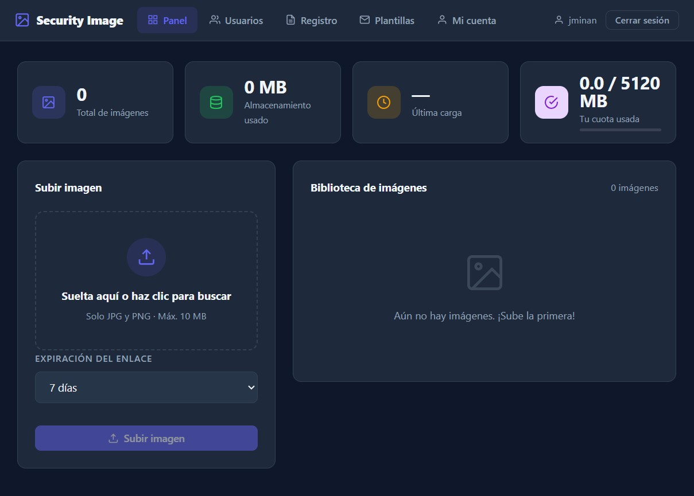

SENIOR SOFTWARE ENGINEER · FULL STACK · AI
8+ AÑOS DESARROLLANDO SOFTWARE
Ingeniería de software con una trayectoria que hoy converge en IA.
Soy Jhonny Darwin Miñan Girón, ingeniero de sistemas y máster en Inteligencia Artificial. Empecé en soporte, redes y servidores; pasé por análisis de sistemas y emprendimiento; y hoy trabajo en ingeniería de software full stack, IA aplicada, agentes y automatización. Entiendo el sistema completo —datos, servicios, interfaz y operación— y llevo una idea desde el problema hasta un producto que funciona en producción.
8+ añosdesarrollando software
2021 → hoySecurity Data · de soporte a Senior
2025 → 2026Máster en IA · UNIR
ENGINEERING
ARTIFICIAL INTELLIGENCE

SOFTWARE ENGINEER
system → productArquitectura + ejecución✦AIAgents · Memory · Automation
01
RESUMEN EJECUTIVO
Una trayectoria, varias capas
No nací en una sola capa del stack. La recorrí.
Mi perfil no se explica solo por el stack actual. Se explica por la suma de etapas: operación y soporte, análisis de sistemas, emprendimiento, desarrollo de software en producción y formación de posgrado en IA.
ENGINEERING
Construcción integral
Backend, frontend, APIs, bases de datos, integraciones y sistemas empresariales, con una mirada que empieza en el problema y termina en la operación.
AI
La IA ya es parte del oficio
Uso y diseño de agentes, automatización, contexto y memoria como herramientas reales de desarrollo y como componentes de nuevos productos.
PRODUCT
Ingeniería con sentido de negocio
La experiencia con clientes, operación y emprendimiento ayuda a traducir necesidades ambiguas en decisiones técnicas y productos utilizables.
02
PERFIL PROFESIONAL
Más que código
Una evolución desde la infraestructura hasta la ingeniería de sistemas.
Mi experiencia se ha construido en entornos muy distintos: soporte y hardware, redes y servidores, análisis de sistemas, desarrollo de aplicaciones, atención al cliente, gestión operativa y emprendimiento.
Ese recorrido definió mi forma de trabajar: primero entiendo el contexto, después modelo el problema, diseño la solución y recién entonces implemento y pruebo. Hoy aplico esa misma disciplina a la Inteligencia Artificial y al desarrollo asistido por agentes.
Software EngineeringAI AgentsAutomationJavaSpring BootPHPLaravelJavaScript / TypeScriptAngularPythonREST APIsMicroservicesMicrofrontendsPostgreSQL / MySQLDockerClean CodeSystems AnalysisProduct Engineering
Entiendo antes de construir
Contexto, requerimientos, flujos, restricciones y arquitectura antes de convertir una necesidad en código.
Pienso en sistema, no en pantalla
La solución incluye datos, servicios, integraciones, operación, seguridad, mantenimiento y evolución.
Busco producción, no solo demo
Funcionalidad, documentación, pruebas y una base técnica que permita que el proyecto siga creciendo.
Uso IA como multiplicador
Agentes, contexto, memoria y automatización para acelerar el trabajo sin perder control sobre la ingeniería.
03
EXPERTISE
Tecnología aplicada
Una base Full Stack reforzada con IA y arquitectura.
El stack importa; más importante es saber dónde encaja cada pieza dentro de un sistema real.
Backend y APIs
Servicios empresariales, APIs REST y microservicios mantenibles, con foco en integración, depuración y estabilidad en producción.
JavaSpring BootPHPLaravelNode.jsPython
Frontend y extensiones
Interfaces web, microfrontends con Module Federation y extensiones de Google Chrome para flujos operativos.
TypeScriptAngularMicrofrontendsNxChrome Extensions
Inteligencia Artificial
IA aplicada al desarrollo y al producto: agentes, automatización, NLP, visión artificial y modelos de aprendizaje automático.
MLNLPComputer VisionAI Agentsscikit-learnXGBoost
Datos e integración
Modelado, persistencia y servicios externos para sistemas que necesitan comunicarse de forma confiable.
PostgreSQLMySQLMongoDBRedisAsterisk
Automatización e infraestructura
Tareas repetitivas convertidas en flujos reproducibles, sobre una base práctica en soporte, redes y servidores.
DockerRESTWorkflowsNetworksServers
Producto y contexto
Traducción de necesidades de usuarios y de la operación en decisiones técnicas, documentación y software útil.
AnalysisPlanningDocumentationClient focus
04
TRAYECTORIA
Historia profesional
Una progresión que se puede ver.
Las etapas se superponen porque en distintos periodos combiné empleo, trabajo independiente, emprendimiento y formación.
HITO ACTUAL
Senior Full Stack · Security Data
Progresión interna: Operador de Registro / Soporte TI → Full Stack Junior → Full Stack Mid-Level → Senior.
2021 — ACTUALIDAD
Security Data
Desarrollador Senior Full Stack
Ingresé como Operador de Registro y Soporte TI y pasé a desarrollo: Full Stack Junior desde diciembre de 2022 y Mid-Level desde marzo de 2024. Desarrollo y mantengo sistemas en producción con PHP, Java y JavaScript: servicios backend, integración de APIs, capas de datos, depuración y refactorización. Diseñé extensiones de Google Chrome para flujos internos (SingExtension, Autolink) y trabajo con arquitectura de microfrontends.
2017 — 2021
Diners Club del Ecuador
Oficial de Crédito
Análisis y gestión crediticia de cartera de tarjetas de crédito. Una etapa fuera de la tecnología que amplió mi comprensión de procesos, riesgo, operación y atención al cliente.
2017 — 2021
Gestiona GTX
Gestor Domiciliario
Negociación y gestión de carteras vencidas y prelegal, desarrollada en paralelo con la etapa en Diners Club.
2016 — 2017
Explofrap
Analista de Sistemas
Análisis de sistemas, desarrollo de aplicaciones con Visual Basic, arquitectura de red y administración de servidores.
2014 — 2017
Supercompu TIC
Propietario y fundador
Emprendimiento propio de servicios técnicos y soluciones informáticas, combinando operación, cliente, soporte y gestión.
2015 — 2016
Grupo Open
Jefe Técnico Informático
Mantenimiento correctivo y preventivo de equipos en agencias de Huaquillas, Arenillas y Santa Rosa.
2015 — 2016
Marcimex
Promotor Informático
Promoción de equipos y accesorios informáticos y control de garantías, etapa desarrollada en paralelo con Grupo Open.
2012 — 2014
Almacén V&A
Analista de Sistemas
Progresión desde técnico auxiliar hasta técnico jefe y responsable del departamento de informática: soporte, operación tecnológica y mantenimiento de sistemas.
2010 — ACTUALIDAD
Codeandolo
Desarrollador de software independiente
Desarrollo de aplicaciones de escritorio y web, comenzando con Java y .NET y evolucionando hacia un stack más amplio.
05
ECUAPP · ECOSISTEMA
ECUAPP
Una suite de software para negocios, construida alrededor de IA + producto.
EcuApp es la startup que estoy construyendo: un conjunto de sistemas independientes que resuelven necesidades concretas —inventario, facturación electrónica, educación, salud, autenticación, firma electrónica— y servicios de IA para voz y documentos.
Cada sistema vive en su propio repositorio dentro de la organización EcuApp en GitHub. La idea es que puedan usarse por separado o combinarse según el cliente.
ESTADO ACTUAL
En construcción
EcuApp todavía no es una empresa consolidada. Sus sistemas están en desarrollo activo en repositorios privados de la organización.
12sistemas
3áreas
PIEZA CENTRAL · V1 EN PRUEBAS
Mnemosine
Capa de memoria y contexto para proyectos y agentes de IA: conocimiento, reglas, tareas, requerimientos y skills reutilizables. El objetivo es que cada proyecto consuma desde una API solo el contexto que necesita, sin duplicar su memoria en cada repositorio.
Cada sistema usa el lenguaje que mejor encaja con su dominio: Java · Spring Boot para firma electrónica, facturación, autenticación, inventario y datos clínicos; Python para los modelos de voz y OCR; y PHP · Laravel para gestión centrada en formularios y reportes.
- Gestión empresarial
- Seguridad y documentos
- IA aplicada a voz y documentos
Hefesto
Manejo, venta, control y distribución de inventario para todo tipo de producto.
Transacciones y concurrencia para stock, ventas y distribución, con integración directa a Mercurio.
Java · Spring BootMercurio
Software de facturación electrónica.
La firma de comprobantes del SRI con certificado .p12 se apoya en las mismas librerías Java que Tyr.
Java · Spring BootAtenea
Sistema de gestión educativa.
Gestión con mucho formulario, reporte y portal: Laravel acelera el CRUD y abarata el hosting.
PHP · LaravelPanacea
Sistema de gestión médica.
Datos clínicos sensibles, auditoría e interoperabilidad HL7 FHIR con HAPI FHIR.
Java · Spring BootClínica
Agendamiento de citas para clínicas.
Agenda, recordatorios y notificaciones sobre la misma base que Clinical Admin.
PHP · LaravelHeimdall
Sistema de control de autenticación.
Spring Security y Spring Authorization Server para OAuth 2.0 y OpenID Connect.
Java · Spring BootTyr
Firma de documentos con firma electrónica.
Las librerías ecuatorianas de firma con certificados .p12 solo existen en Java.
Java · Spring BootEC Google Extension
Extensión para Google Chrome con visor de PDF.
Se ejecuta dentro del navegador: el estándar de extensiones de Chrome es JavaScript/TypeScript.
TypeScriptForcis
Conversión de audio a texto.
Reconocimiento de voz con modelos como Whisper, cuyo ecosistema es Python.
PythonPoseidon
Conversión de texto a voz.
Síntesis de voz con modelos TTS abiertos como Piper, nativos de Python.
PythonLoki
Clonación de voz a partir de audios de ejemplo.
Modelos de clonación como XTTS u OpenVoice, construidos sobre PyTorch.
PythonThot
OCR de imágenes y archivos PDF.
OCR con Tesseract o PaddleOCR y extracción de PDF con PyMuPDF.
Python06
PROYECTOS · EVIDENCIA
Trabajo visible
De la visión a artefactos concretos.

01
AI · MEMORY · ARCHITECTURE
↗
Mnemosine
Arquitectura de memoria y contexto para agentes y proyectos de software. Organiza memoria de corto y largo plazo, episódica, semántica y procedimental, junto con reglas, tareas y skills por rol, lenguaje y arquitectura. Es la pieza que da continuidad al trabajo con IA entre sesiones y proyectos.

02
EDUCACIÓN · EN PRODUCCIÓN
↗
Cúspide
Sistema de control educativo para clases, pagos, estudiantes y docentes, con un panel de alumnos, matrículas, ingresos, gastos y balance mensual.

03
SALUD · EN PRODUCCIÓN
↗
Clinical Admin
Administración de una clínica: agenda de citas por paciente, médico y especialidad, estados de atención y confirmaciones por correo y WhatsApp.

04
SEGURIDAD · EMPRESARIAL
↗
Security Image
Gestor de imágenes desplegado en el portal de Security Data: carga de JPG y PNG, enlaces con expiración configurable, cuota de almacenamiento por usuario, administración de usuarios, plantillas y registro.
05
IA · INVESTIGACIÓN
↗
Multimodal Early Fusion · Green AI
Experimentación pública sobre clasificación multimodal con fusión temprana de datos tabulares y texto, y sobre la eficiencia de los modelos (Green AI). Es la misma línea de investigación de mi Trabajo Fin de Máster.
07
FORMACIÓN
Base académica
Ingeniería + Inteligencia Artificial.
La formación académica se desarrolló en paralelo con el trabajo. El Máster en Inteligencia Artificial está culminado —TFM defendido en septiembre de 2026— y el título se encuentra en proceso administrativo.
2025 — 2026Máster Universitario en Inteligencia ArtificialUNIR · promedio final 8/10 · TFM: «Pipeline software reproducible para la clasificación multimodal de intenciones de renovación y negociabilidad mediante fusión temprana de datos tabulares y texto»
2009 — 2020Ingeniería de SistemasUniversidad Técnica de Machala · trabajo de titulación: sistema web de gestión de transporte y seguimiento de carga por GPS (publicado en 2020, ISBN 9786203032277)
2025 — 2026Formación complementariaAWS Machine Learning Foundations (2026) · Programación en Python (2025)
CertificacionesJava, Spring Boot y AndroidFundamentos de Java Spring Boot · Programación Orientada a Objetos con Java SE · Firebase para Android · Programación Básica
ÁREAS DE LA MAESTRÍA
Machine Learning no supervisado · Cloud para IA · Gestión de proyectos de IA · NLP · Razonamiento y planificación automática · Redes neuronales y Deep Learning · Técnicas de Machine Learning · Visión Artificial
Formación continua en Platzi y Coursera.
08
CONTACTO
Una trayectoria construida.
Ahora, nuevos sistemas.
Si buscas a alguien para construir software de producción, automatizar procesos o aplicar IA y agentes a un problema real, escríbeme. También converso con gusto sobre EcuApp y Mnemosine.
También disponible enEnglish CV